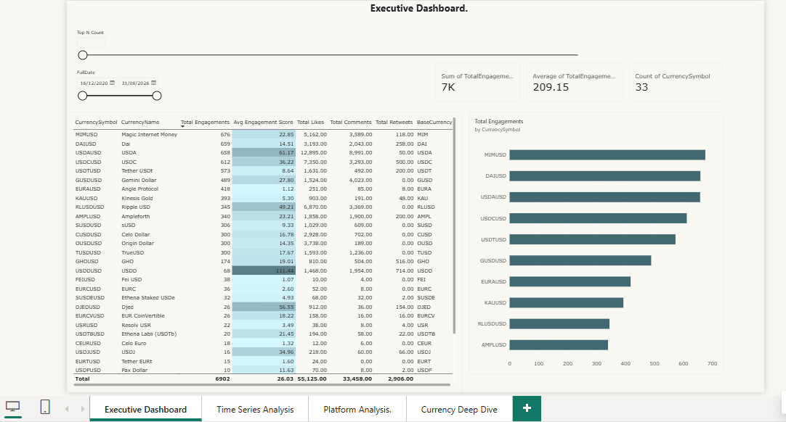
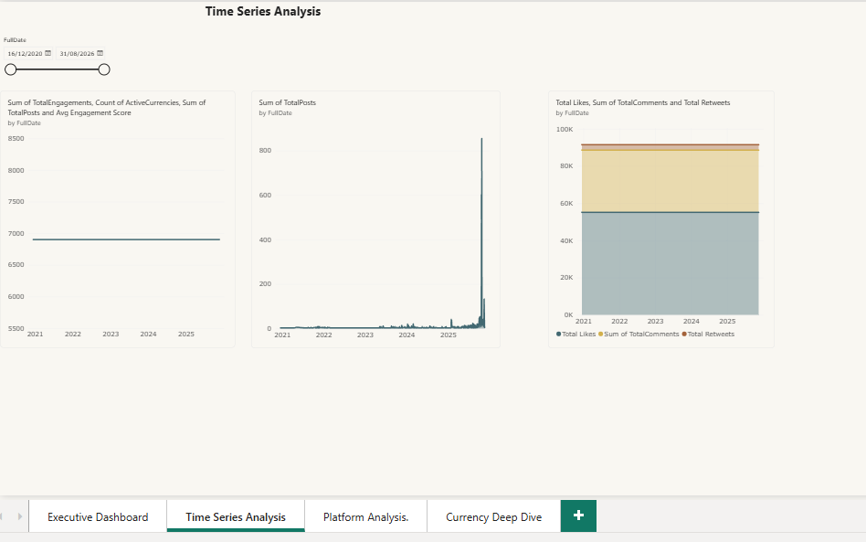
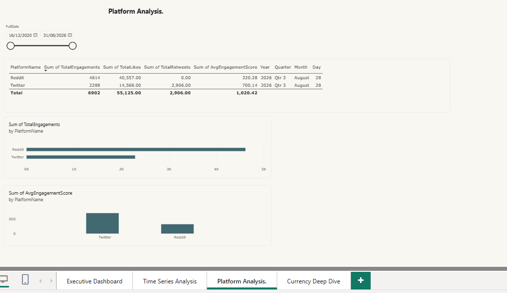
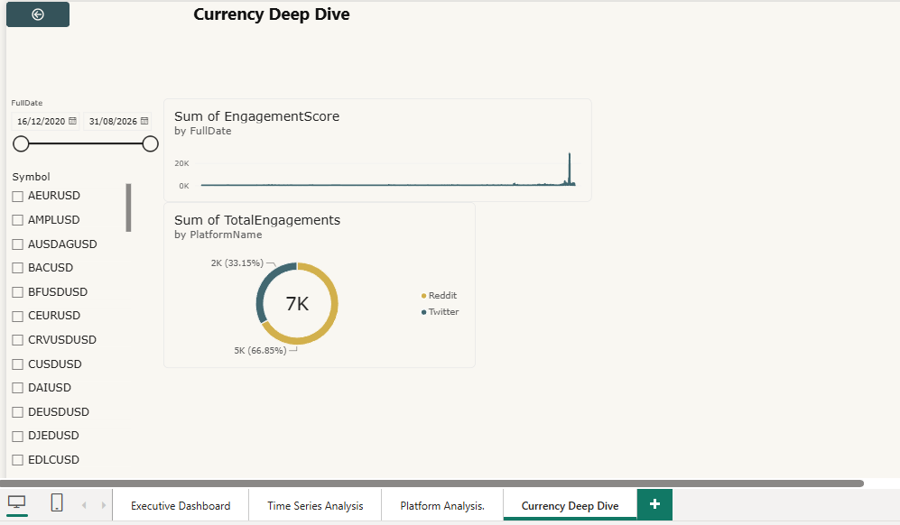

Executive dashboardnoodles-dashboard.png

Time series analysisnoodles-timeseries.png

Platform analysisnoodles-platform.png

Currency deep divenoodles-currency.png
INTERNSHIP PROJECT In progress
Noodles Financial Intelligence Platform
Preparing financial and social engagement data for structured analysis and business intelligence reporting as part of my BI / Data Analyst internship with MVP Studio / Industry Connect.
01Raw JSONSource data
02PythonPrepare & explore
03MySQLStructured data
04Power BIReporting
My contribution: Python-based data exploration and preparation, social engagement analysis, and technical documentation. Add or update contributions as each project milestone is completed.